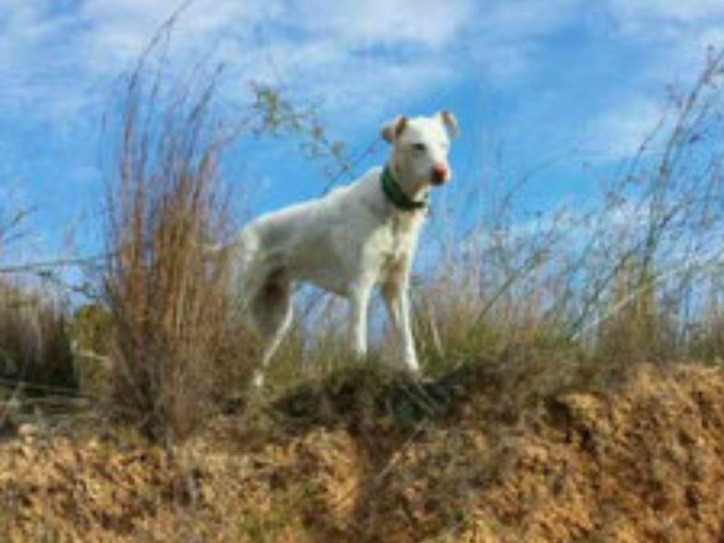
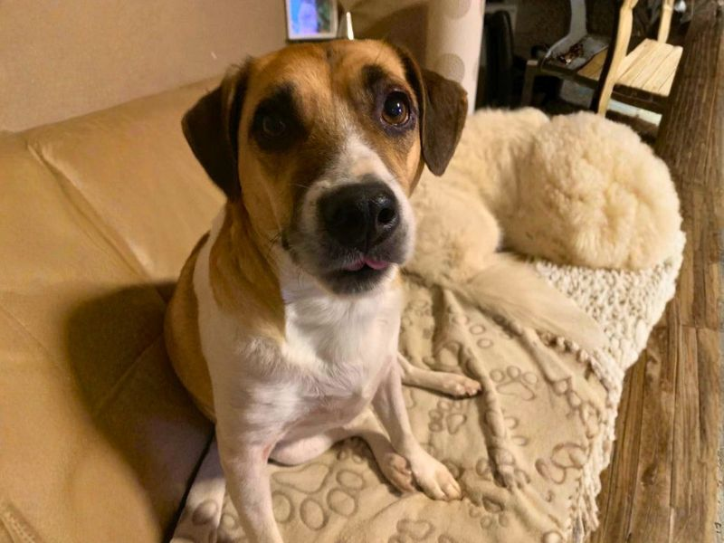
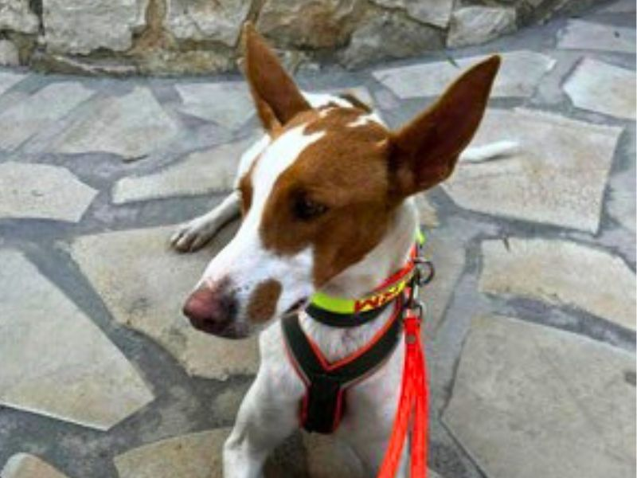
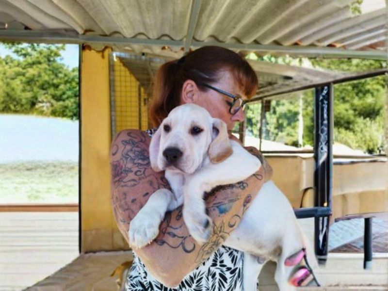

Tierschutz
Mein Engagement
Hundetraining ist mein Beruf – aber manche Hunde brauchen mehr als Training. Sie brauchen eine zweite Chance und jemanden, der nicht aufgibt.
Seit neun Jahren fahre ich zweimal jährlich nach Spanien und unterstütze dort den Tierschutzverein Pluto Protectora Animales an der Costa Blanca. Ich gebe Erziehungsseminare vor Ort, helfe bei der Vermittlung von Hunden und begleite Tiere auf ihrem Weg nach Deutschland. Einigen Hunden konnte ich hier in der Region ein liebevolles Zuhause vermitteln.
Auch ich selbst habe drei Hunde aus dem Tierschutz – Ramon, Cuby und Nuria. Jeder von ihnen hat mir gezeigt, wozu Hunde fähig sind, wenn man ihnen Zeit, Geduld und Vertrauen schenkt.
Tierschutz an der Costa Blanca, Spanien
Buzón 6011, 03724 Moraira, Spain
Tel. +34 693 704 255
Vier Geschichten
Hinter jeder Zahl steckt ein Hund mit einer Geschichte. Vier davon möchte ich Ihnen erzählen – stellvertretend für viele andere, denen geholfen werden konnte.

Spanien → Deutschland
Unser Ramon hatte in Spanien keine Chance. Er galt als schwierig – doch was er wirklich brauchte, war Vertrauen und ein klares Zuhause. In Deutschland hat er sich hervorragend eingelebt und ist ein fröhlicher, ausgeglichener Hund geworden. Seine Geschichte zeigt: Es geht nicht darum, was ein Hund war – sondern darum, was er werden kann.

Spanien → Deutschland
Cuby kam aus Spanien – anfangs sehr ängstlich und unsicher gegenüber allem. Mit viel Geduld und Zeit ist aus ihm ein freches, selbstbewusstes Kerlchen geworden. Er erinnert mich täglich daran, dass Veränderung möglich ist – man muss nur dranbleiben.

Spanien → Weserbergland
Nuria, eine Galga aus Südspanien, hatte gelernt, Menschen zu misstrauen. Sie brauchte keine Befehle – sie brauchte Zeit. Heute lebt sie bei einer Familie im Weserbergland und joggt morgens mit ihrer Besitzerin durch den Wald. Ein Bild, das man sich am Anfang kaum vorstellen konnte.

Spanien → Deutschland
Buddy kam abgemagert und verängstigt zu uns – kaum in der Lage, einem Menschen ins Auge zu sehen. Monatelange geduldige Arbeit später ist er ein selbstsicherer, fröhlicher Hund, der heute in einem liebevollen Zuhause lebt und seinen Menschen jeden Tag neu überrascht.
Ich helfe Ihnen gern bei der Suche nach dem richtigen Hund und begleite Sie von der ersten Begegnung bis zur vollständigen Integration in Ihren Alltag. Warum nicht ein Hund aus dem Tierschutz?
Integration, Vertrauensaufbau, Grundgehorsam – ich begleite Sie und Ihren neuen Hund von Anfang an.